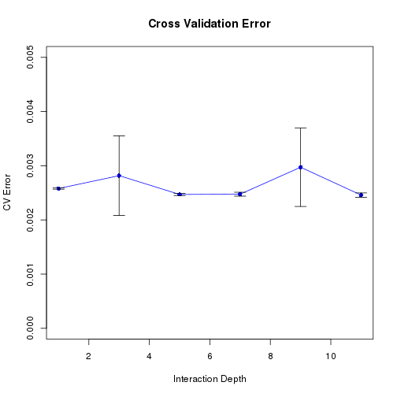

In your final repo, there should be an R markdown file that organizes all computational steps for evaluating your proposed image classification framework.
This file is currently a template for running evaluation experiments of image analysis (or any predictive modeling). You should update it according to your codes but following precisely the same structure.
if(!require("EBImage")){
source("https://bioconductor.org/biocLite.R")
biocLite("EBImage")
library("EBImage")
}
## Loading required package: EBImage
if(!require("gbm")){
install.packages("gbm")
library("gbm")
}
## Loading required package: gbm
## Loaded gbm 2.1.4
# if(!require("png")){
# install.packages("png")
# library("png")
# }
if(!require("doParallel")){
install.packages("doParallel")
library("doParallel")
}
## Loading required package: doParallel
## Loading required package: foreach
## Loading required package: iterators
## Loading required package: parallel
# Real physical cores in the computer
cores <- detectCores()
if(cores>1){
if(.Platform$OS.type=="windows"){
cl <- makeCluster(cores)
registerDoParallel(cl, cores=cores)
}
else{
if(!require("doMC")){
install.packages("doMC")
library("doMC")
}
registerDoMC(cores)
}
run.parallel=TRUE
}else
run.parallel=FALSE
## Loading required package: doMC
Set the working directory to the image folder. Specify the training and the testing set. For data without an independent test/validation set, you need to create your own testing data by random subsampling. In order to obain reproducible results, set.seed() whenever randomization is used.
set.seed(2018)
# setwd("./ads_fall2018_proj3")
# here replace it with your own path or manually set it in RStudio to where this rmd file is located.
# use relative path for reproducibility
Provide directories for training images. Low-resolution (LR) image set and High-resolution (HR) image set will be in different subfolders.
train_dir <- "../data/train_set/" # This will be modified for different data sets.
train_LR_dir <- paste(train_dir, "LR/", sep="")
train_HR_dir <- paste(train_dir, "HR/", sep="")
train_label_path <- paste(train_dir, "label.csv", sep="")
In this chunk, we have a set of controls for the evaluation experiments.
run.cv=TRUE # run cross-validation on the training set
K <- 5 # number of CV folds
run.train=TRUE # New switch, whether run training.
run.feature.train=TRUE # process features for training set
run.test=TRUE # run evaluation on an independent test set
run.feature.test=TRUE # process features for test set
# run.parallel already set at ### Parallel Computing Setup
Using cross-validation or independent test set evaluation, we compare the performance of models with different specifications. In this example, we use GBM with different depth. In the following chunk, we list, in a vector, setups (in this case, depth) corresponding to models that we will compare. In your project, you might compare very different classifiers. You can assign them numerical IDs and labels specific to your project.
model_values <- seq(1, 11, 2)
model_labels = paste("GBM with depth =", model_values)
We provide extra information of image label: car (0), flower (1), market (2). These labels are not necessary for your model.
extra_label <- read.csv(train_label_path, colClasses=c("NULL", NA, NA))
feature.R should be the wrapper for all your feature engineering functions and options. The function feature( ) should have options that correspond to different scenarios for your project and produces an R object that contains features and responses that are required by all the models you are going to evaluate later.
feature.R
I do recommend using non-parallel version here, as extract feature is a data-intensive --- not computation intensive step. Thus, parallel computing won't significantly save time --- even increase running time, for the parallel computing will raise additional coordination cost, depends on different hardwares:
| Running Time | HPC | Pixelbook | old labtop |
|---|---|---|---|
| Parallel | 19 | 55 | 80 |
| Non-Parallel | 51 | 33 | 90 |
if(run.parallel)
source("../lib/feature_parallel.R") else
source("../lib/feature.R")
tm_feature_train <- NA
if(run.feature.train){
tm0=proc.time()
dat_train <- feature(train_LR_dir, train_HR_dir)
tm_feature_train=proc.time()-tm0
save(dat_train, file="../output/feature_train.RData")
}else{
load("../output/feature_train.RData")
}
##
## Attaching package: 'abind'
## The following object is masked from 'package:EBImage':
##
## abind
feat_train <- dat_train$feature
label_train <- dat_train$label
rm(dat_train)
tmp=gc() # release memory
Call the train model and test model from library.
train.R and test.R should be wrappers for all your model training steps and your classification/prediction steps.
train.R
test.R
if(run.parallel)
source("../lib/train_parallel.R") else
source("../lib/train.R")
### The test parallel will increase much more time, so we switch off (comment) it
# if(run.parallel)
# source("../lib/test_parallel.R") else
source("../lib/test.R")
source("../lib/cross_validation.R")
if(run.cv){
err_cv <- array(dim=c(length(model_values), 2))
for(k in 1:length(model_values)){
cat("k=", k, "\n")
err_cv[k,] <- cv.function(feat_train, label_train, model_values[k], K)
system("free -m")
}
save(err_cv, file="../output/err_cv.RData")
}else{
load("../output/err_cv.RData")
}
## k= 1
## k= 2
## k= 3
## k= 4
## k= 5
## k= 6
tmp=gc() # release memory
Visualize cross-validation results.
# if(run.cv){
# load("../output/err_cv.RData")
plot(model_values, err_cv[,1], xlab="Interaction Depth", ylab="CV Error",
main="Cross Validation Error", type="n", ylim=c(0, 0.005))
points(model_values, err_cv[,1], col="blue", pch=16)
lines(model_values, err_cv[,1], col="blue")
arrows(model_values, err_cv[,1]-err_cv[,2], model_values, err_cv[,1]+err_cv[,2],
length=0.1, angle=90, code=3)

# }
model_best=model_values[1]
# if(run.cv){
model_best <- model_values[which.min(err_cv[,1])]
cat("The min cv is",min(err_cv[,1]),"for depth",model_best,"\n")
## The min cv is 0.002458547 for depth 11
# }
par_best <- list(depth=model_best)
if(run.train){
tm0=proc.time()
fit_train <- train(feat_train, label_train, par_best)
tm_train=proc.time()-tm0
save(fit_train, file="../output/fit_train.RData")
}else{
load("../output/fit_train.RData")
}
tmp=gc() # release memory
Feed the final training model with the completely holdout testing data.
superResolution.R
if(run.parallel)
source("../lib/superResolution_parallel.R") else
source("../lib/superResolution.R")
test_dir <- "../data/test_set/" # This will be modified for different data sets.
test_LR_dir <- paste(test_dir, "LR/", sep="")
test_HR_dir <- paste(test_dir, "HR/", sep="")
if(run.test){
tm0=proc.time()
superResolution(test_LR_dir, test_HR_dir, fit_train)
tm_test=proc.time()-tm0
}
Prediction performance matters, so does the running times for constructing features and for training the model, especially when the computation resource is limited.
cat("Time for constructing training features=", tm_feature_train[3], "s \n")
## Time for constructing training features= 28.419 s
#cat("Time for constructing testing features=", tm_feature_test[3], "s \n")
cat("Time for training model=", tm_train[3], "s \n")
## Time for training model= 1500.212 s
cat("Time for super-resolution=", tm_test[3], "s \n")
## Time for super-resolution= 768.291 s
source("../lib/mse_psnr.R")
mp=msepsnr()
cat("MSE is", mp[1])
## MSE is 0.002539523
cat("PSNR is", mp[2])
## PSNR is 27.90005
if(run.parallel & .Platform$OS.type=="windows"){
stopImplicitCluster()
stopCluster(cl)
}